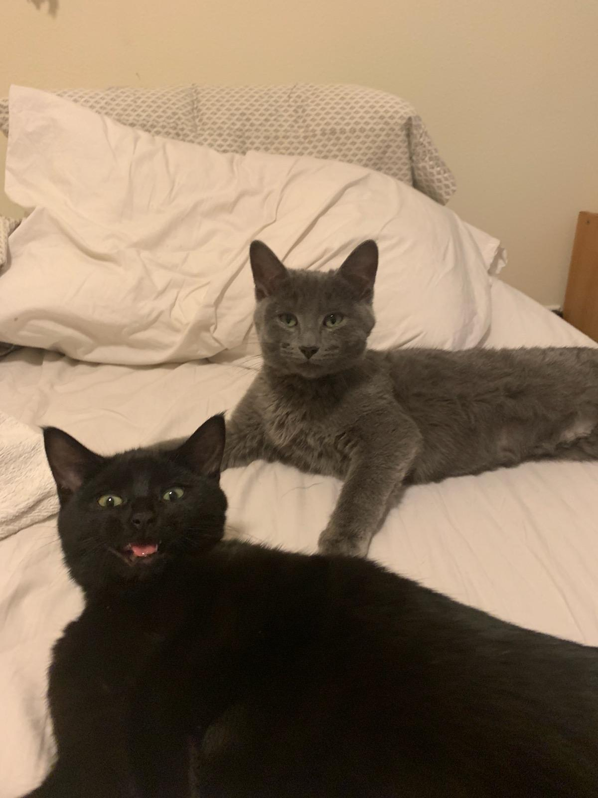

Ralphie & Dahlia
a psycho-kitty blog
Welcome to a blog about Ralphie and Dahlia, two psycho-kitties

This is a list of some of their favorite activities:
- Meowing uncontrollably:
- at 3 am when they can tell you just hit your REM cycle
- at 4:30 am with complimentary headbutts, to make sure you still aren't sleeping too deep
- anytime you walk through the kitchen, because psycho-kitties need constant nourishment to keep up their intensity levels
- Sleeping all day... until you go to bed
- Sniffing too much cat nip and derping out
- Listening to their favorite song on full blast
Ralphie & Dahlia would like to bring attention to a very special friend Millycat and her recent, shocking
interview.